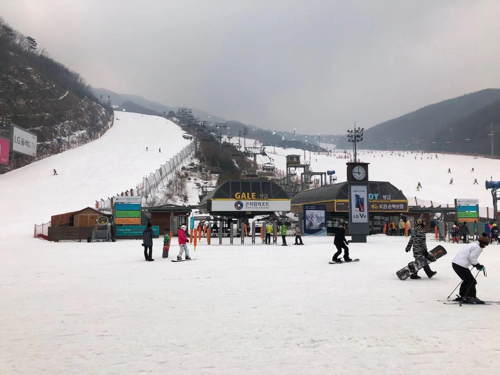
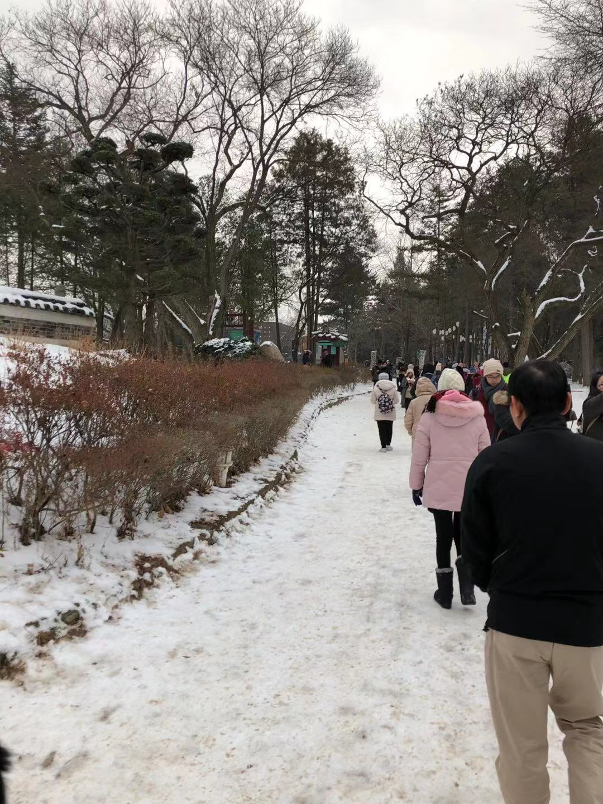

My name is Cherry Chow. I am a F4 student in Sacred Heart Canossian College (English Section). I am an introvert who seldom talk in front of people but I took everything serious that I wouldn’t do them right before the deadline so that I can have more time dealing with it, which turns out to a better quality. I love dancing, which helps me vent my frustration; I enjoy reading, which brings me into an adventurous world; I enjoy travelling, which gives me a relaxing holiday.
 